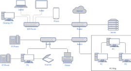

Uma **rede de computadores** é um conjunto de dispositivos interligados, como computadores, impressoras e servidores, que podem trocar informações e compartilhar recursos.
 ---As redes são essenciais no nosso dia a dia. Elas permitem que você compartilhe arquivos, acesse a internet, use a mesma impressora com outras pessoas e se comunique com amigos e colegas em qualquer lugar do mundo.
---Existem diferentes tipos de redes, dependendo do tamanho e da área que cobrem. As mais comuns são:
Para uma rede funcionar, precisamos de alguns componentes essenciais, como o **roteador** (o "cérebro" da rede), os **cabos de rede** e a **placa de rede**, que permitem a conexão física dos dispositivos.
Uma rede de computadores é, de forma simples, um grupo de dois ou mais dispositivos interconectados que podem se comunicar e compartilhar recursos. Esses dispositivos podem ser computadores, servidores, impressoras, smartphones, e qualquer outro aparelho que consiga trocar dados. A principal razão para a existência de redes é a troca de informações e o compartilhamento de recursos. Pense na sua casa: sua TV, seu celular e seu computador podem estar conectados à mesma rede Wi-Fi. Isso permite que você assista a um vídeo do YouTube na TV, enquanto seu celular acessa a internet e seu computador imprime um documento em uma impressora compartilhada.